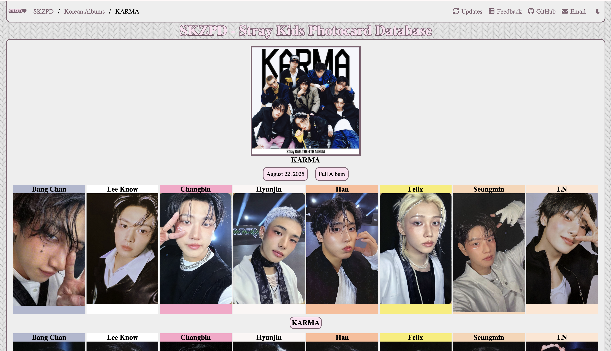
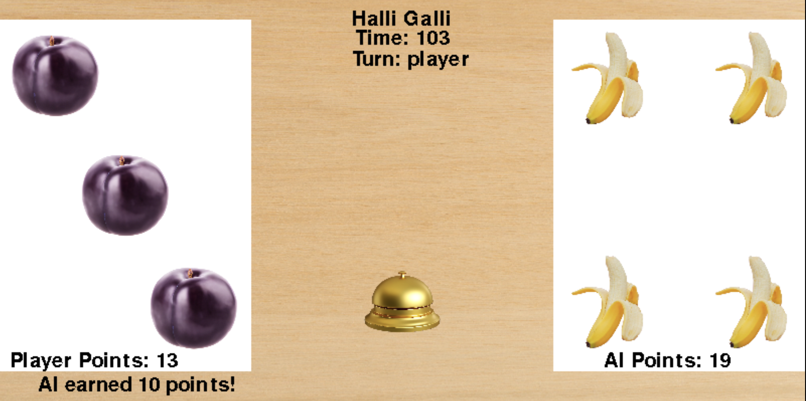
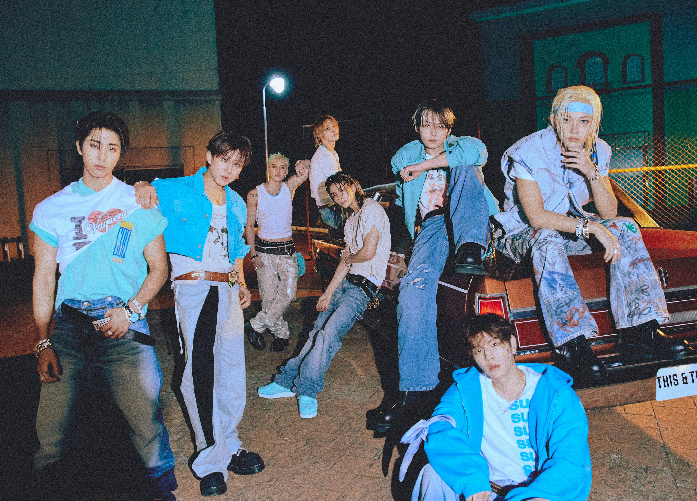
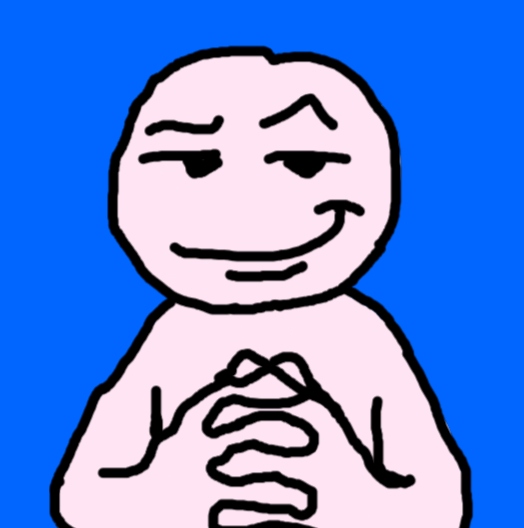

SKZPD (Stray Kids Photocard Database) is a passion project
born from my hobby of collecting photocards (collectible items in
K-Pop). While looking for online sources to cross-reference my
physical collection with, I thought "I wish something that made this
easier existed". I realized that it could exist and that I could
make it myself.

My final project for Harvard's CS50P (CS50's Introduction to
Programming with Python), is a recreation of Halli Galli, a
classic Korean card game. The 100% python code is on my GitHub! You
can click above to play a live demo on the web.

Ultilizing the itunes api to reccomend the user songs based on inputted options.
A simple fan project to keep track of Stray Kids' military entry and exit date.

My first time implementing a backend (via Supabase).